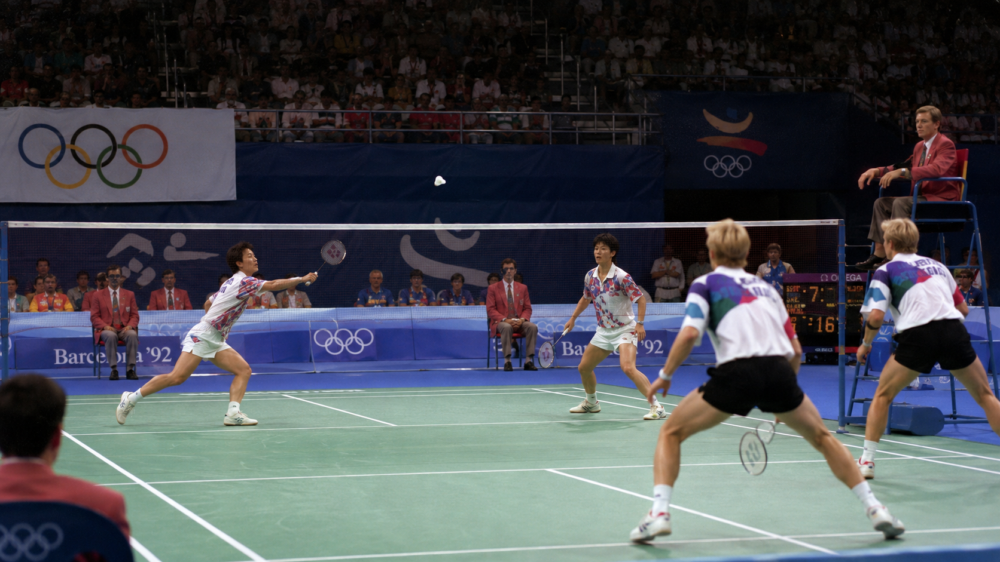
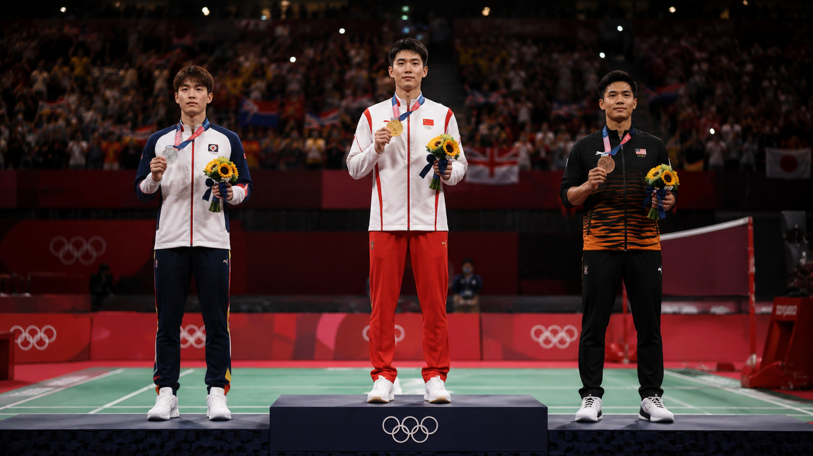
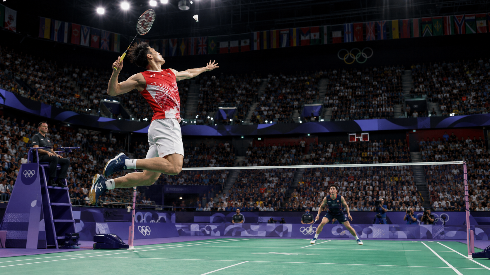

When it comes to prestige, winning Olympic gold is the greatest achievement a badminton player can reach. Although the World Championships are held more frequently, the Olympic gold medal is considered the most valuable title because the tournament takes place only once every four years and qualification is extremely demanding.
Badminton at the Olympic Games
General Information
- Organizer: International Olympic Committee (IOC), in collaboration with the Badminton World Federation (BWF).
- First official appearance: Barcelona 1992.
- Frequency: Every 4 years.
- Number of events: 5.
- Highest prestige: Olympic gold medal.
History
Although many people believe badminton made its Olympic debut in 1992, its Olympic history began earlier.
1972 – Munich
Badminton was a demonstration sport.
No official medals were awarded.
Invited players from 11 countries participated.
1988 – Seoul
Badminton once again appeared as a demonstration sport.
The positive reception from spectators and the sport’s international growth helped pave the way for its permanent inclusion in the Olympic program.
1992 – Barcelona
Badminton officially became an Olympic sport, with medals awarded for the first time.
It was one of the new sports introduced at those Games.
Events
There are currently five Olympic events:
- Men’s Singles.
- Women’s Singles.
- Men’s Doubles.
- Women’s Doubles.
- Mixed Doubles.
Evolution of the Events
Barcelona 1992
There were only four events:
- Men’s Singles.
- Women’s Singles.
- Men’s Doubles.
- Women’s Doubles.
Mixed Doubles was not yet included.
Atlanta 1996
The following event was added:
Mixed Doubles
Since then, the five current events have remained part of the Olympic program.

Qualification
Olympic qualification is one of the most difficult processes in badminton.
Players must:
- Accumulate points during the Olympic qualification period.
- Remain among the highest-ranked players in the world.
- Comply with the maximum number of qualification places allowed per country.
Even if a country has many players among the best in the world, it can qualify only a limited number of representatives in each event.
Competition System
The tournament currently combines:
Group Stage
Players compete in several matches.
The best performers advance.
Knockout Stage
From the Round of 16 or quarterfinals, depending on the event, one defeat means elimination.
Match Format
All matches follow the official BWF rules:
- Best of three games.
- Traditionally, each game is played to 21 points; the BWF approved a 15-point system for future competitions, although the Olympic Games continue to use the current 21-point format.
Medals
Unlike at the World Championships:
The Olympic Games do include a bronze-medal match.
The following medals are awarded:
- Gold.
- Silver.
- Bronze.
The losing semifinalists play a match to determine third place. This system has been used since Atlanta 1996; at Barcelona 1992, both losing semifinalists received bronze medals.

How Long Does the Tournament Last?
Generally:
9 to 10 days
Depending on the Olympic schedule.
It includes:
- Group stage.
- Round of 16.
- Quarterfinals.
- Semifinals.
- Finals.
Ranking
The Olympic Games are not part of the BWF World Tour.
However:
- They award points for the world ranking.
- They represent the highest level of prestige in the sport.
- They have an independent qualification process.
Most Successful Countries
Historically, the leading nations include:
- China.
- Indonesia.
- South Korea.
Countries that have also won Olympic gold medals include:
- Denmark.
- Spain.
Other countries and territories that have won important medals include:
- India.
- Japan.
- Malaysia.
- Thailand.
- Chinese Taipei.
- Hong Kong, China.
China Dominates Olympic Badminton History
China is the most successful nation in Olympic badminton.
Up to Paris 2024, it had accumulated:
- 47 Olympic medals in total.
- 22 gold medals.

Indonesia Made History at Badminton’s Olympic Debut
At Barcelona 1992, Indonesia won both singles titles:
- Alan Budikusuma.
- Susi Susanti.
These victories were especially significant because they represented Indonesia’s first Olympic gold medals in any sport.
Legendary Olympic Champions
Some of the most important names in Olympic badminton history include:
- Lin Dan — China.
- Chen Long — China.
- Viktor Axelsen — Denmark.
- Carolina Marín — Spain.
- Susi Susanti — Indonesia.
- Zhang Ning — China.
- Zhao Yunlei — China.
- Lee Yang and Wang Chi-lin — Chinese Taipei.
Notable Records
Lin Dan
The first player in history to win:
- Olympic gold in 2008.
- Olympic gold in 2012.
In Men’s Singles.
Viktor Axelsen
Won:
- Gold at Tokyo 2020.
- Gold at Paris 2024.
Becoming another of the few two-time Olympic champions in Men’s Singles.
Carolina Marín
At Rio 2016, she became:
- The first Spanish Olympic badminton champion.
- The first European woman to win Olympic gold in Women’s Singles.
Zhao Yunlei
At London 2012, she won two gold medals at the same Olympic Games:
- Women’s Doubles.
- Mixed Doubles.
An extremely rare achievement.
Curiosities
Olympic Gold Is the Ultimate Dream
Many players consider the prestige hierarchy to be:
Olympic Gold > World Championships > World Tour Finals
There Is No Team Competition
Unlike the Thomas Cup, Uber Cup, or Sudirman Cup, the Olympic Games feature only singles and doubles events; there is no national team tournament.
China’s Olympic Debut Was Surprising
At Barcelona 1992, China arrived as one of the favorites after dominating the 1991 World Championships, but failed to win a single gold medal.
Badminton Is One of the Fastest Sports at the Olympic Games
The shuttlecock can exceed 500 km/h during professional smashes, making badminton one of the racket sports with the fastest recorded shots in the world.
Matches Can Last More Than an Hour
Although many matches finish within 40–60 minutes, closely contested finals can last well over an hour.
Interesting Facts
- Badminton appeared as a demonstration sport in 1972 and 1988, but official medals were not awarded until Barcelona 1992.
- Mixed Doubles was added to the Olympic program at Atlanta 1996, completing the five events contested today.
- Indonesia won the first Olympic gold medals in its history through badminton at Barcelona 1992.
- China is the most successful nation in Olympic badminton, with 47 total medals and 22 gold medals through Paris 2024.
- Olympic badminton brings together the best players in the world, but many are unable to qualify because of country quotas, making qualification almost as difficult as winning a medal.